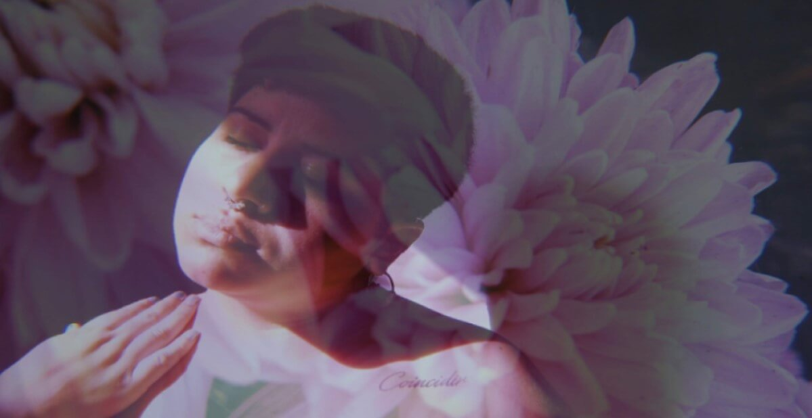

Vivir Creativamente
Éste proyecto nace de las ganas de compartir la cantidad de diversas expresiones creativas que llevamos dentro, que nos hemos olvidado, que hemos bloqueado por necesidad de protegernos de la mirada ajena. Nace de las fervientes ganas de compartir mis sabidurias, de acompañar procesos y trascender los velos pero con el cuerpo- mente-alma. Para dejar de percibirnos como seres totalmente fragmentados, sino siendo con el Todo. Nace de lo más profundo de mi corazón para quiénes realmente resuenen con éste viaje de pura experimentación, contención, aprendizajes, risas, juegos, encuentros trascendentales, de conexión con el alma, de amor y calma. Creo que somos como plastilinas que, si entrenamos abrir nuestra escucha, podemos desarrollar la gran capacidad de cambiar de forma, si así lo elegimos. De resignificar nuestro camino. Creo que es importante estar presente para registrar de manera consciente lo que estemos habitando como proceso interno y más importante aún es, saber que todxs, absolutamente todxs tenemos nuestra propia caja de herramientas. Encarnamos con ellas pero a medida que vamos creciendo e inculcandonos de las creencias sociales, mandatos, información del exterior también vamos olvidando y adormeciendo cada vez más nuestras más profundas herramientas que trajimos para compartirle al mundo. Para expandirnos con absolutamente toda nuestra luz. Estamos despertando, con amor y dulzura. Con un profundo sentimiento de gratitud por estar encarnadxs y ejercer nuestro derecho a vivir creativamente ésta experiencia terrenal. Abandonar el miedo y autodescubrir nuestro potencial. De la transformación a la expansión de nuestra esencia. Sin perder lo individual y en comunidad.¡Bienvenide seas! Estamos Reverdeciendo.
